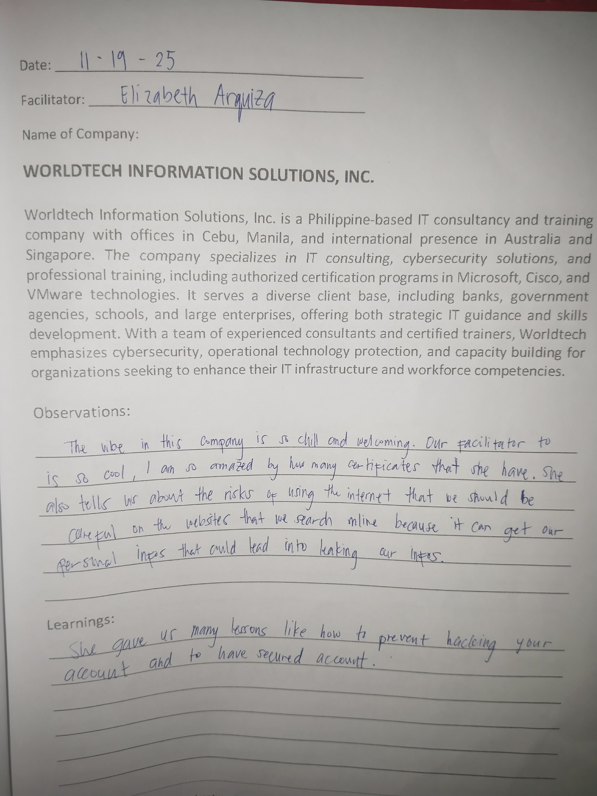
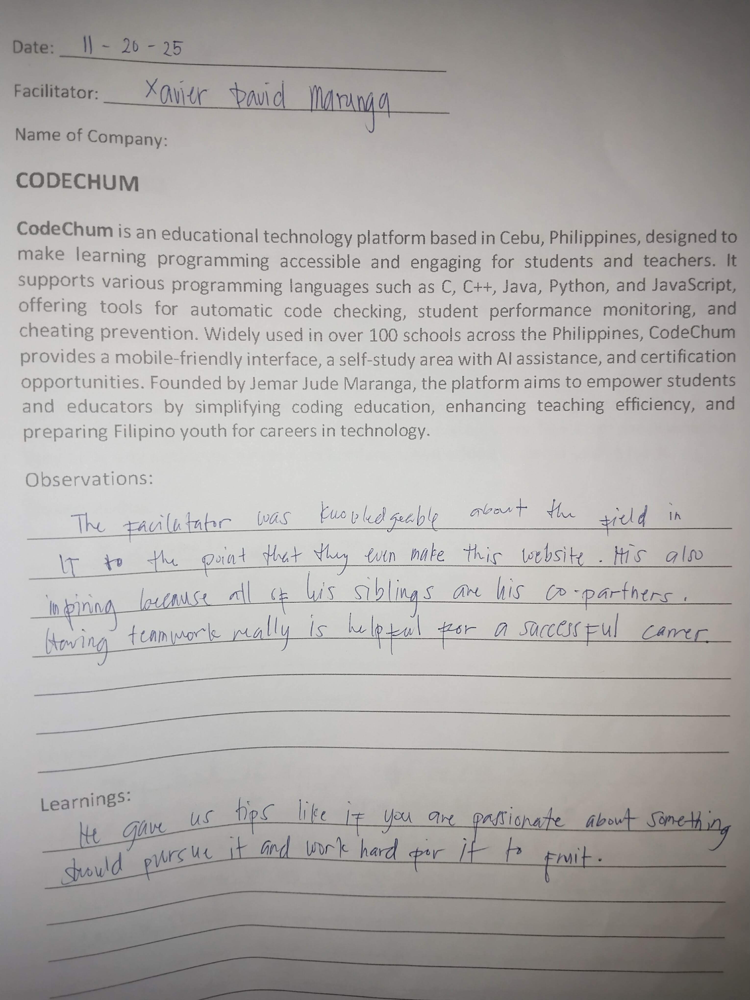
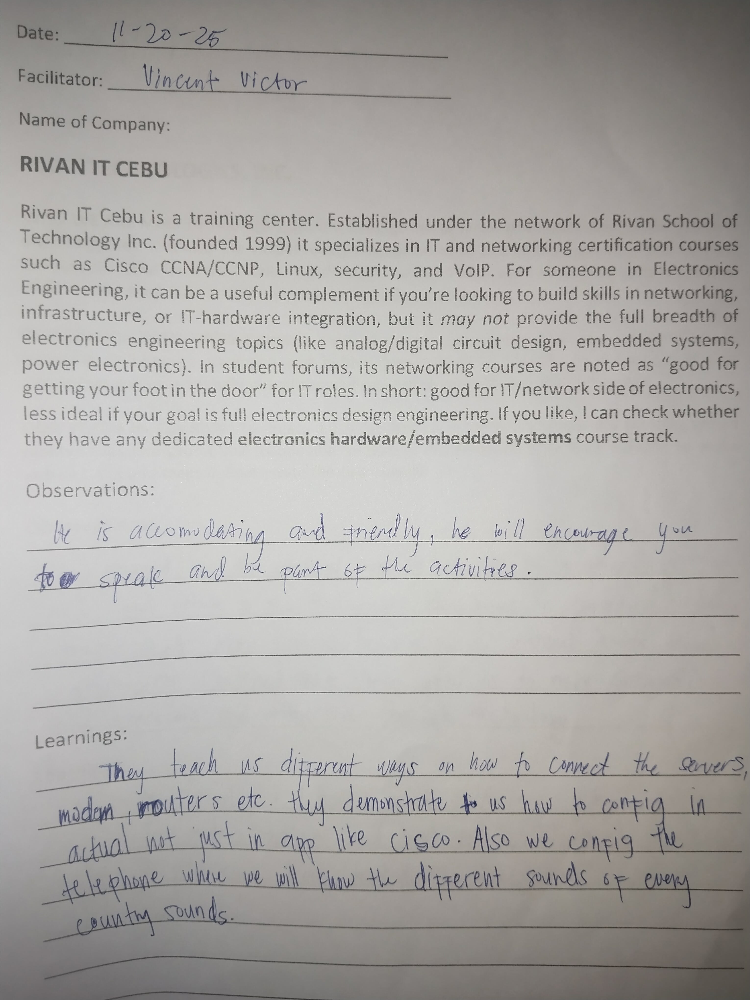
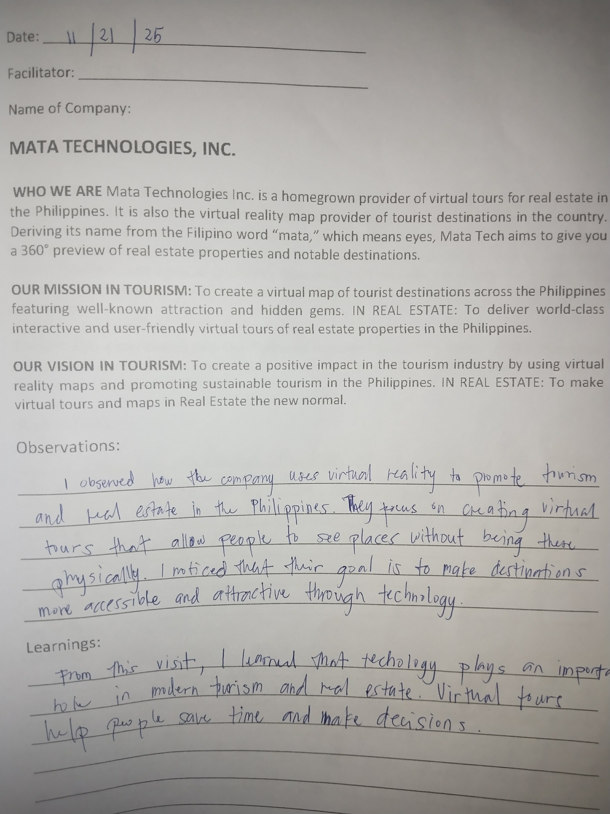
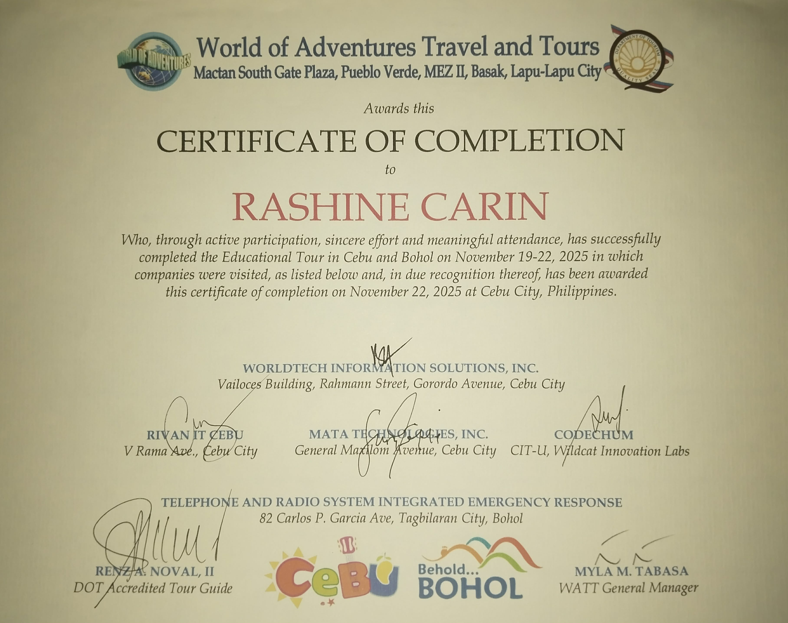
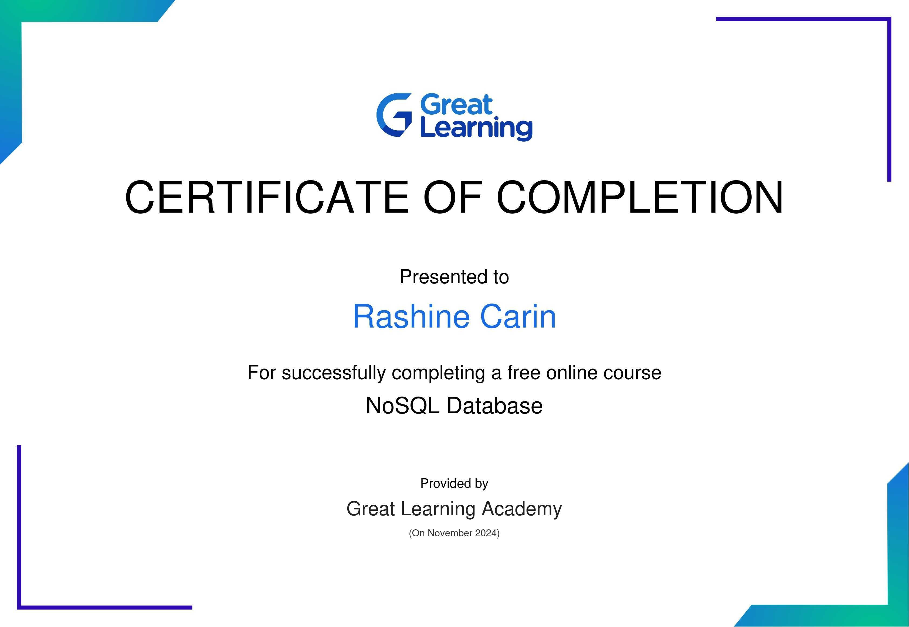
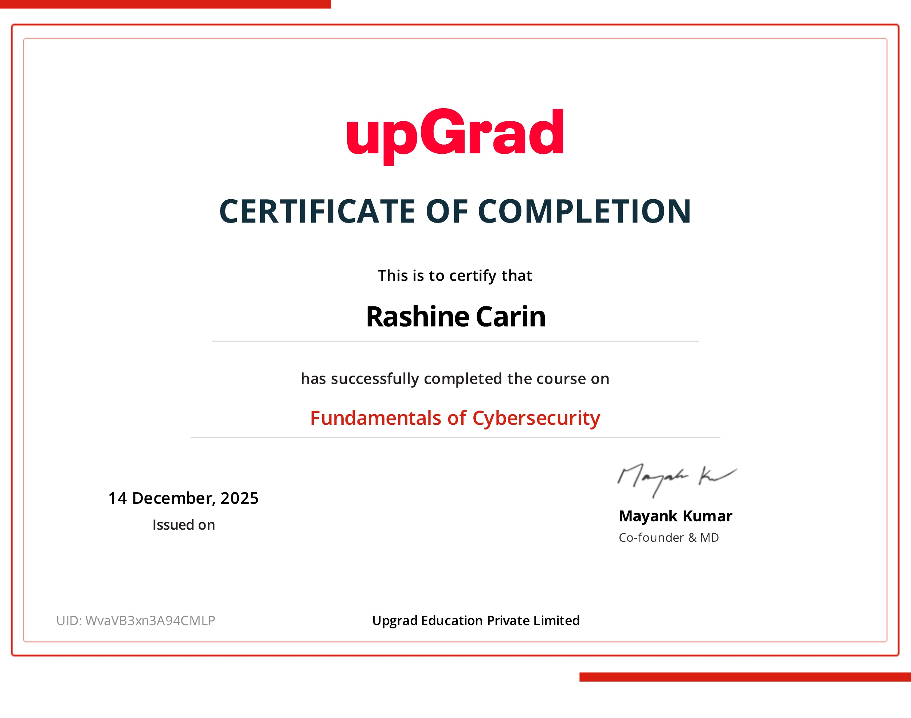

Cebu Educational Tour
As a 3rd-year IT student, I participated in an educational tour in Cebu visiting leading IT companies focused on cybersecurity and software development. The tour deepened my understanding of real-world IT operations, secure infrastructure practices, and collaborative product-building (e.g., apps like CodeChum), strengthening my passion for building secure and user-focused software.
Role
Student / Observer
Focus
Cybersecurity & Web Apps
Location
Cebu, Philippines
Gallery
Click any image for a short description.


Journal





Certificates



Contact
Key learnings
- Real-world cybersecurity practices & toolchains
- App development workflows (testing, feedback loops)
- Importance of practical, hands-on learning